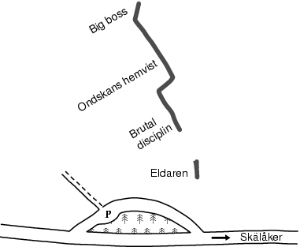

GPS: 59.088781054053605,18.280391693115234
__TOC__
Brant och imponerande klippa vid vägen till Skälåker ute på Gålö. Klippan, som är som maximalt ca 20 m hög, har ett antal friklättringsleder av hög klass och svårighet. Närmast vägen är klippan brant med stora och runda formationer som uppenbarligen formats av havet. En markant dieder avgränsar denna utskjutande del från den branta och släta väggen till vänster.
Väst, öppet för solen. Det finns miljardvis med fästingar i snåren!
Kör Nynäshamnsvägen, sväng av mot Dalarö och kör tills du har en lanthandel på höger sida. Sväng höger mot Gålö och efter ca 1km sväng vänster vid skylt Gålö havsbad och Skälåker. Klippan ligger på vänster sida efter ca 3km. Kör in på parkeringen vid fornstigen. Parkeringen ligger på vänster sida strax före hembygdsmuseet (röda byggnader på höger sida av vägen).
Ligger ca 20m till höger
Kategori:Saknar kolumner
Kategori:Stockholm
Kategori:Södra Södertörn
Kategori:Trad
Kategori:Sport
Kategori:Vertikalt
Kategori:Överhäng
Copyright (C) Permission is granted to copy, distribute and/or modify this document under the terms of the GNU Free Documentation License, Version 1.3